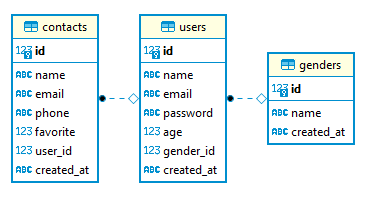

Moduł 7 - Zajęcia 12 - Materiały dodatkowe - Podstawy SQL
1.2 CREATE TABLE: Tworzymy tabelę
Do utworzenia tabeli w SQL wykorzystywane jest wyrażenie CREATE TABLE. Przyjmuje ono jako parametry nazwy kolumn, które chcemy wprowadzić, a także ich typy danych.
Utworzymy trzy tabele z nazwami "genders", "users" i "contacts".
W tabeli "genders" będą trzy kolumny:
- id - numer porządkowy płci typ INT, to unikalny klucz;
- name - nazwa płci typ VARCHAR(30);
- created_at - czas utworzenia zapisu typ TIMESTAMP, wartość domyśla to obecny czas i data.
Kod do utworzenia:
CREATE TABLE genders (
id INT PRIMARY KEY,
name VARCHAR(30),
created_at TIMESTAMP DEFAULT CURRENT_TIMESTAMP
);
W tabeli "users" będziemy mieli siedem kolumn:
- id - numer porządkowy kontaktu typ INT, to unikalny klucz;
- name - nazwa użytkownika, typ VARCHAR(30)
- email - adres elektroniczny użytkownika, typ VARCHAR(30);
- password - hasło użytkownika, typ VARCHAR(30);
- age - wiek użytkownika, typ TINYINT UNSIGNED;
- gender_id - to foreign key, który wiąże tabele "users" i "genders" połączeniem jeden do wielu. Jedna płeć może być u wielu użytkowników;
- created_at - czas utworzenia zapisu typ TIMESTAMP, wartość domyślna to bieżące czas i data.
Kod do utworzenia:
CREATE TABLE users (
id INT PRIMARY KEY,
name VARCHAR(30),
email VARCHAR(30),
password VARCHAR(30),
age TINYINT UNSIGNED,
gender_id INT,
created_at TIMESTAMP DEFAULT CURRENT_TIMESTAMP,
FOREIGN KEY (gender_id) REFERENCES genders (id)
ON DELETE SET NULL
ON UPDATE CASCADE
);
Tutaj pojawiła się u nas instrukcja:
FOREIGN KEY (gender_id) REFERENCES genders (id)
ON DELETE SET NULL
ON UPDATE CASCADE
Mówi, że dla kolumny gender_id w tabeli users należy utworzyć referencyjny odnośnik do tabeli genders, przy czym wartość kolumny będzie się zgadzać z wartością kolumny id w tabeli genders dla konkretnego zapisu. Zapis ON DELETE SET NULL mówi, że jeśli zapis będzie usunięty z tabeli genders, wtedy powinniśmy wartość dla kolumny gender w tabeli users ustawić w wartości NULL. Zapis ON UPDATE CASCADE mówi, że jeśli zmieniona zostanie wartość pola id w tabeli genders, to wartość dla kolumny gender_id w tabeli users również zostanie automatycznie zmieniona.
W tabeli "contacts" będzie siedem kolumn:
- id - numer porządkowy kontaktu typ INT, to unikalny klucz;
- name - nazwa kontaktu typ VARCHAR(30);
- email - adres elektroniczny kontaktu typ VARCHAR(30);
- phone - telefon kontaktu typ VARCHAR(30);
- favorite - kontakt znajduje się w ulubionych lub nie, logicznego typu;
- user_id - to foreign key, który wiąże tablicę "contacts" i "users" połączeniem jeden do wielu. Jeden użytkownik może mieć wiele kontaktów;
- created_at - czas utworzenia zapisu typ TIMESTAMP, wartość domyślna to bieżące czas i data.
Kod będzie wyglądał następująco:
CREATE TABLE contacts (
id INT PRIMARY KEY,
name VARCHAR(30),
email VARCHAR(30),
phone VARCHAR(30),
favorite BOOLEAN,
user_id INT,
created_at TIMESTAMP DEFAULT CURRENT_TIMESTAMP,
FOREIGN KEY (user_id) REFERENCES users (id)
ON DELETE CASCADE
ON UPDATE CASCADE
);
Po tym nasza baza danych będzie miała następujący ER-wykres:

1.3 INSERT: Wprowadzanie danych
Teraz uzupełnijmy nasze tabele. Można to zrobić przy pomocy polecenia INSERT. Format polecenia przed wprowadzeniem danych - pokazujemy nazwę kolumn. Jeżeli nie wskażemy którejś z kolumn, na jej miejscu będzie zapisane NULL lub wartość domyślna.
Wstawmy wartości do tabeli genders:
INSERT INTO genders (id, name)
VALUES (1, 'male'), (2, 'female');
Przy wstawianiu nie wskazaliśmy wartości dla pola created_at, ale dzięki instrukcji DEFAULT CURRENT_TIMESTAMP wartość będzie podstawiona automatycznie.
Wstawiamy wartość do tabeli users:
INSERT INTO users (id, name, email, password, age, gender_id)
VALUES (1, 'Boris', 'boris@test.com', 'password', 23, 1),
(2, 'Alina', 'alina@test.com', 'password', 32, 2),
(3, 'Maksim', 'maksim@test.com', 'password', 40, 1);
Wstawiamy wartość do tabeli contacts:
INSERT INTO contacts (id, name, email, phone, favorite, user_id)
VALUES (1, 'Allen Raymond', 'nulla.ante@vestibul.co.uk', '(992) 914-3792', 0, 1),
(2, 'Chaim Lewis', 'dui.in@egetlacus.ca', '(294) 840-6685', 1, 1),
(3, 'Kennedy Lane', 'mattis.Cras@nonenimMauris.net', '(542) 451-7038', 1, 2),
(4, 'Wylie Pope', 'est@utquamvel.net', '(692) 802-2949', 0, 2),
(5, 'Cyrus Jackson', 'nibh@semsempererat.com', '(501) 472-5218', 0, null);
1.4 SELECT: Odebranie danych
Dane zapytanie wykorzystywane jest w przypadku, w którym musimy pokazać dane w tabeli. Chyba najprostszym przykładem wykorzystywania SELECT będzie następujące zapytanie:
SELECT * FROM contacts
Rezultatem danego zapytania będzie tabela ze wszystkimi danymi w tabeli contacts.
| id | name | phone | favorite | user | created_at | |
|---|---|---|---|---|---|---|
| 1 | Allen Raymond | nulla.ante@vestibul.co.uk | (992) 914-3792 | 0 | 1 | 2021-06-06 23:18:08 |
| 2 | Chaim Lewis | dui.in@egetlacus.ca | (294) 840-6685 | 1 | 1 | 2021-06-06 23:18:08 |
| 3 | Kennedy Lane | mattis.Cras@nonenimMauris.net | (542) 451-7038 | 1 | 2 | 2021-06-06 23:18:08 |
| 4 | Wylie Pope | est@utquamvel.net | (692) 802-2949 | 0 | 2 | 2021-06-06 23:18:08 |
| 5 | Cyrus Jackson | nibh@semsempererat.com | (501) 472-5218 | 0 | 2021-06-06 23:18:08 |
Znak gwiazdki * oznacza, że chcemy pokazać wszystkie kolumny z tabeli bez wyjątków. Ponieważ w bazie danych zazwyczaj jest więcej niż jedna tabela, musimy wskazać nazwę tej, z której dane chcemy zobaczyć. Robi się to, wykorzystując słowo kluczowe FROM.
Gdy potrzebujesz tylko niektórych kolumn z tabeli, możesz wskazać ich nazwy przez przecinek zamiast gwiazdki.
SELECT name, email FROM contacts ORDER BY name
Czasem potrzebujemy posortować wyjściowe dane. W tym celu wykorzystujemy ORDER BY "nazwa kolumny". OREDER BY ma dwa modyfikatory: ASC sortować rosnąco, wartość domyślna i DESC sortować malejąco:
| name | |
|---|---|
| Allen Raymond | nulla.ante@vestibul.co.uk |
| Chaim Lewis | dui.in@egetlacus.ca |
| Cyrus Jackson | nibh@semsempererat.com |
| Kennedy Lane | mattis.Cras@nonenimMauris.net |
| Wylie Pope | est@utquamvel.net |
Aby włączyć do danych wyjściowych tylko niektóre konkretne zapisy według warunku, wykorzystuje się słowo kluczowe WHERE. Pozwala ono filtrować dane po określonym warunku.
W następnym zapytaniu wprowadzimy tylko wybrane kontakty.
SELECT name, email
FROM contacts
WHERE favorite = true
ORDER BY name
Wynik:
| name | |
|---|---|
| Chaim Lewis | dui.in@egetlacus.ca |
| Kennedy Lane | mattis.Cras@nonenimMauris.net |
Warunki w WHERE mogą być napisane z wykorzystaniem logicznych operatorów AND i OR, a także matematycznych operatorów porównania (=, <, >, <=, >=, <>).
Warunki w WHERE mogą być zapisane z wykorzystaniem jeszcze kilku poleceń, które wyglądają następująco:
IN - IN - porównuje wartość w kolumnie z kilkoma możliwymi wartościami i zwraca true, jeżeli wartość pokrywa się choćby z jedną wartością.
SELECT name, email
FROM users
WHERE age IN(20, 30, 40)
ORDER BY name
Wynik:
| name | |
|---|---|
| Maksim | maksim@test.com |
BETWEEN - sprawdza, czy wartość znajduje się w jakimś przedziale.
SELECT name, email, age
FROM users
WHERE age BETWEEN 30 AND 40
ORDER BY name
Wynik:
| name | age | |
|---|---|---|
| Alina | alina@test.com | 32 |
| Maksim | maksim@test.com | 40 |
LIKE - wyszukuje po szablonie.
Tak więc, jeżeli chcemy wyprowadzić wszystkie kontakty, w których nazwie jest litera 'L', możemy wykorzystać następujący zapis:
SELECT name, email
FROM contacts
WHERE name LIKE '%L%'
ORDER BY name
Znak % oznacza dowolny ciąg znaków (0 znaków również się do tego zalicza).
Wynik:
| name | |
|---|---|
| Allen Raymond | nulla.ante@vestibul.co.uk |
| Chaim Lewis | dui.in@egetlacus.ca |
| Kennedy Lane | mattis.Cras@nonenimMauris.net |
| Wylie Pope | est@utquamvel.net |
W SQL również jest inwersja. W tym celu trzeba napisać NOT przed dowolnym logicznym wyrażeniem w warunku (NOT BETWEEN i tak dalej).
SELECT name, email, age
FROM users
WHERE age NOT BETWEEN 30 AND 40
ORDER BY name
Wynik:
| name | age | |
|---|---|---|
| Boris | boris@test.com | 23 |
1.5 Funkcje agregacji
SQL ma wiele wbudowanych funkcji do wykonywania różnych operacji. Przeanalizujemy najczęściej wykorzystywane:
- COUNT() - zwraca ilość linijek;
- SUM() - zwraca sumę wszystkich pól z liczbowymi wartościami w nich;
- AVG() - zwraca średnią wartość wśród linijek;
- MIN()/MAX() - zwraca minimalną/maksymalną wartość wśród linijek.
Znajdź minimalny wiek wśród użytkowników.
SELECT min(age) as minAge
FROM users
Wynik:
| minAge |
|---|
| 23 |
Znajdź średni wiek użytkowników:
SELECT avg(age) as averageAge
FROM users
Wynik:
| averageAge |
|---|
| 31.666666666666668 |
Znajdźmy ilość kontaktów dla każdego użytkownika przy pomocy funkcji COUNT. W operatorze SELECT musimy dodać łańcuch GROUP BY user_id, ponieważ funkcja jest agregowana po polu user_id i należy grupować znaczenia po nazwie.
SELECT COUNT(user_id) as total_contacts, user_id
FROM contacts
GROUP BY user_id
Wynik:
| total_contacts | user_id |
|---|---|
| 0 | |
| 2 | 1 |
| 2 | 2 |
Tak jak oczekiwaliśmy, dla każdego użytkownika dodaliśmy po dwa kontakty. Jest także kontakt bez użytkownika.
1.6 Umieszczone SELECT
Dotychczas analizowaliśmy tylko proste zapytania. Często jednak trzeba wykorzystać tak zwane umieszczone zapytania lub podzapytania.
Należy wyprowadzić kontakty dla użytkowników, których wiek jest mniejszy niż 30 lat.
Pierwsze zapytanie, znaleźć id użytkowników młodszych niż 30 lat.
SELECT id
FROM users
WHERE age < 30
Następnie łączymy zapytania przy pomocy WHERE:
SELECT *
FROM contacts
WHERE user_id IN (SELECT id
FROM users
WHERE age < 30)
Wynik:
| id | name | phone | favorite | user_id | created_at | |
|---|---|---|---|---|---|---|
| 1 | Allen Raymond | nulla.ante@vestibul.co.uk | (992) 914-3792 | 0 | 1 | 2021-06-07 07:59:35 |
| 2 | Chaim Lewis | dui.in@egetlacus.ca | (294) 840-6685 | 1 | 1 | 2021-06-07 07:59:35 |
1.7 Pseudonimy
W poprzednich przykładach używaliśmy już pseudonimów. Aby nadać kolumnie pseudonim, można wykorzystać słowo klucz AS:
SELECT id, name as fullName, phone as mobile
FROM contacts
Wynik:
| id | fullName | mobile |
|---|---|---|
| 1 | Allen Raymond | (992) 914-3792 |
| 2 | Chaim Lewis | (294) 840-6685 |
| 3 | Kennedy Lane | (542) 451-7038 |
| 4 | Wylie Pope | (692) 802-2949 |
| 5 | Cyrus Jackson | (501) 472-5218 |
Pseudonimy często wykorzystuje się na początku pracy z powiązanymi tabelami.
1.8 JOIN: Przyłączenie tabeli
W bazach danych tabele są najczęściej powiązane między sobą. Na przykład, mamy tabele users i genders powiązane ze sobą polem gender_id, a tabele contacts i users polem user_id.
Do połączenia tabel wykorzystuje się opertator JOIN. Przeanalizujemy konkretne przykłady.
Jak już wspomnieliśmy, w tabeli users znajduje się kolumna gender_id, w danym przypadku jest ona tak zwanym foreign key i ogniwem łączącym dwie tabele. Jeżeli chcemy wyprowadzić wszystkie informacje o użytkowniku, łącznie z informacją o jego płci, musimy podłączyć drugą tabelę genders. Aby to zrobić, można wykorzystać INNER JOIN, gdzie warunek połączenia wprowadza się przy pomocy ON:
SELECT u.id, u.name, u.email, g.name AS gender
FROM users AS u
INNER JOIN genders AS g ON g.id = u.gender_id
Wynik:
| id | name | gender | |
|---|---|---|---|
| 1 | Boris | boris@test.com | male |
| 2 | Alina | alina@test.com | female |
| 3 | Maksim | maksim@test.com | male |
To prosty przykład wykorzystania JOIN. Istnieje jeszcze kilka wariantów jego wykorzystania:
- (INNER) JOIN: Zwraca zapisy, których wartości odpowiadają sobie w obu tabelach.
- LEFT (OUTER) JOIN: Zwraca wszystkie zapisy z lewej tabeli i odpowiadające zapisy z prawej tabeli.
- RIGHT (OUTER) JOIN: Zwraca wszystkie zapisy z prawej tabeli i odpowiadające zapisy z lewej tabeli.
- FULL (OUTER) JOIN: Zwraca wszystkie zapisy, jeżeli są zgodności w lewej lub prawej tabeli.

W okrągłym nawiasie słowa można domyślnie nie pisać, to znaczy zapisy INNER JOINiJOIN` to ekwiwalenty.
Przeanalizujmy konkretny przykład, aby zrozumieć różnicę między INNER JOIN i LEFT JOIN:
SELECT c.id, c.name, c.email, u.name AS owner
FROM contacts AS c
JOIN users AS u ON u.id = c.user_id
Wynik:
| id | name | owner | |
|---|---|---|---|
| 1 | Allen Raymond | nulla.ante@vestibul.co.uk | Boris |
| 2 | Chaim Lewis | dui.in@egetlacus.ca | Boris |
| 3 | Kennedy Lane | mattis.Cras@nonenimMauris.net | Alina |
| 4 | Wylie Pope | est@utquamvel.net | Alina |
W tym przypadku, w próbie, nie otrzymujemy kontaktu bez użytkownika, ponieważ wykorzystywane było skrzyżowanie tabel. Aby otrzymać wszystkie kontakty, nawet jeśli brak przy nich właścicieli z tabeli users, musimy wykorzystać LEFT JOIN.
SELECT c.id, c.name, c.email, u.name AS owner
FROM contacts AS c
LEFT JOIN users AS u ON u.id = c.user_id
Wynik:
| id | name | owner | |
|---|---|---|---|
| 1 | Allen Raymond | nulla.ante@vestibul.co.uk | Boris |
| 2 | Chaim Lewis | dui.in@egetlacus.ca | Boris |
| 3 | Kennedy Lane | mattis.Cras@nonenimMauris.net | Alina |
| 4 | Wylie Pope | est@utquamvel.net | Alina |
| 5 | Cyrus Jackson | nibh@semsempererat.com | NULL |
1.9 UPDATE: Zmiana danych
Zmiana danych w tabeli SQL, robi się to przy pomocy polecenia UPDATE.
Wykorzystanie UPDATE zawiera: po pierwsze wybór tabeli, w której znajduje się pole, które chcemy zmienić, po drugie ustawienie w zapisie nowej wartości przy pomocy SET i po trzecie - wykorzystanie WHERE, aby oznaczyć konkretne miejsce w tabeli.
W tabeli contacts jest u nas zapis z id = 5, w którym nie ma wartości pola user_id. Ustawmy, że właścicielem tego kontaktu będzie użytkownik Maksim z id = 3 w tabeli users.
UPDATE contacts SET user_id = 3 WHERE id = 5;
1.10 DELETE: Usuwanie zapisów z tabeli
Usuwanie zapisów z tabeli przez SQL jest również prostą operacją. Najważniejsze, aby zaznaczyć przy pomocy WHERE, co dokładnie chcemy usunąć. W przeciwnym razie usuniemy wszystkie zapisy z tabeli, czego chcielibyśmy uniknąć.
DELETE FROM contacts WHERE id = 4;
1.11 Usuwanie tabel
eżeli chcemy usunąć wszystkie dane z tabeli, a jednocześnie zostawić samą tabelę, to musimy użyć polecenia TRUNCATE:
TRUNCATE TABLE contacts;
Gdy chcemy usunąć samą tabelę, musimy użyć polecenia DROP:
DROP TABLE contacts;